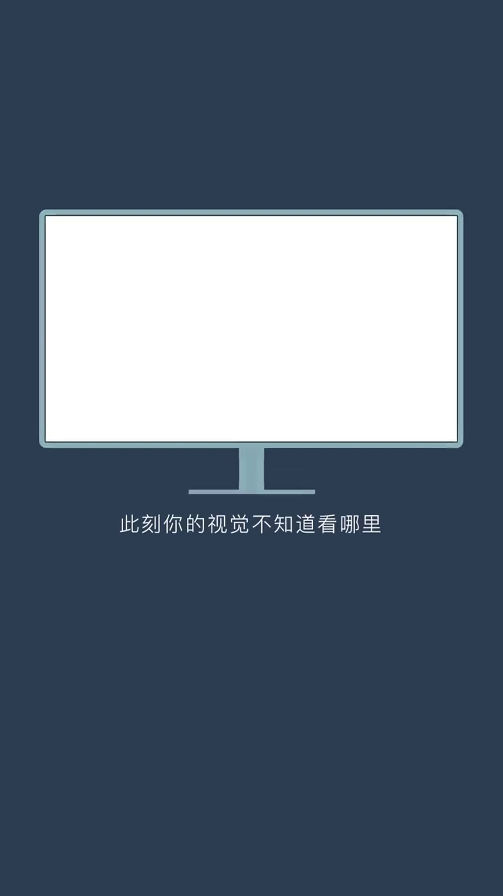
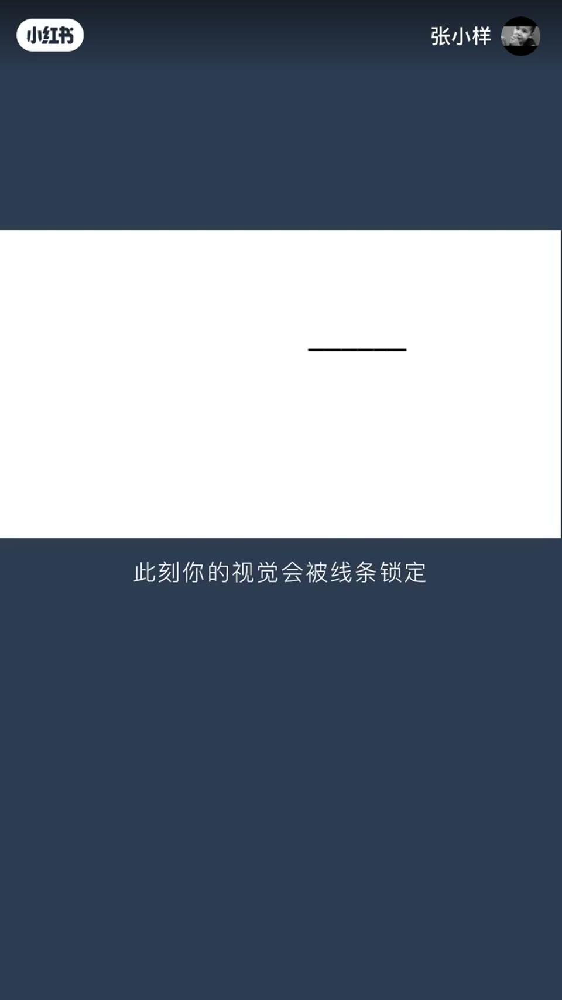
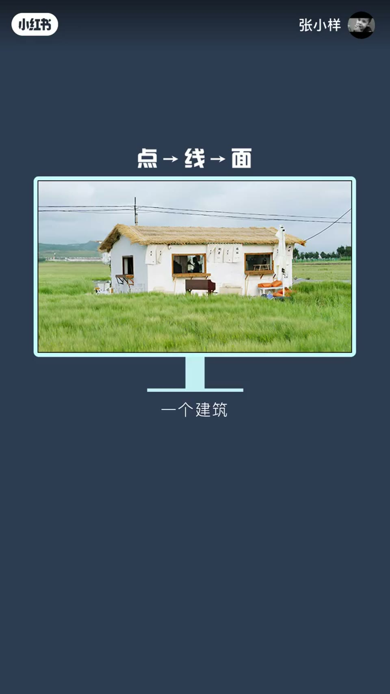
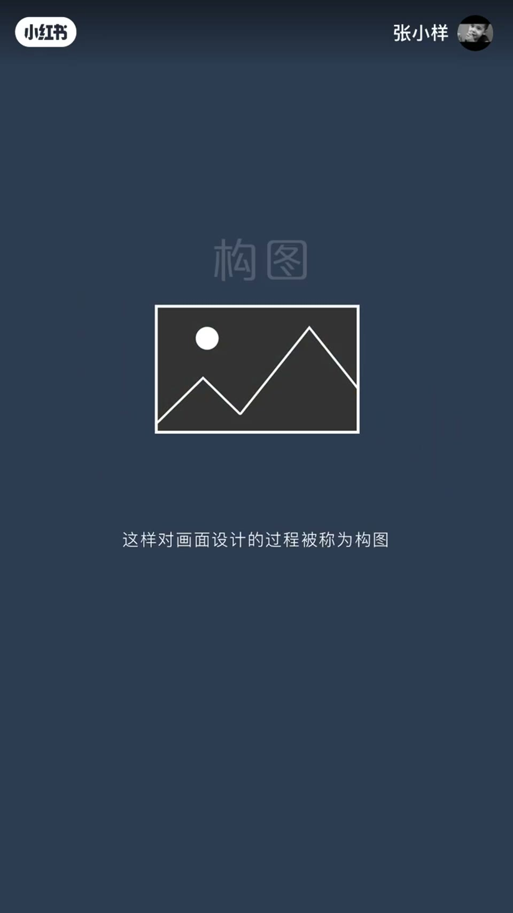
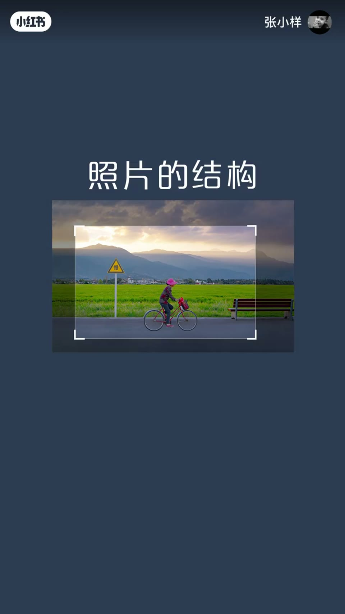

内容要点
一支 1 分多的视觉设计基础课：从一个显示器上的纯白屏幕讲起——没有落点时视觉无处安放，出现一个黑点就有了落脚点；黑点移动视觉跟着移动，点足够多形成线，线足够多组成面，面组成物体。视觉是有心理重量的，画面会左中右倾，放一个物体就能找回平衡；构图最重要的是结构——抓取画面结构的配重比例，用最少的元素交代最全面的现实场景。
知识结构
纯白屏幕没有落点，出现一个黑点视觉才有落脚点。
黑点移动视觉跟着移动，黑点足够多就形成一条线。
线条足够多组成面，很多面组成物体，视觉在物体线条上游走。
画面会左中右倾，在右边放一个物体就能找回视觉平衡。
构图最重要的是结构；抓取结构配重比例，用最少元素交代最全面场景。
点线面是抓住视觉的语言，构图是结构的配重——用最少元素交代最全面的现实，是高级的视觉修炼。
00:00-00:25点动成线
「这是一个显示器，屏幕上面有一片纯白。此刻你的视觉不知道看哪里。当屏幕上出现一个黑点，你的视觉就有了落脚点。」
「当这个黑点移动，你的视觉也会跟着移动。当黑点足够多，就形成了一条线。此刻你的视觉会被线条锁定。」


00:25-00:45线多成面成物
「当线条足够多，可以组成一个面；很多个面又可以组成某个物体。此刻你的视觉会在物体的线条上游走。这就是视觉传达的点线面元素。」
「点线面可以是现实中的任何物体，比如一条公路、一个建筑、一条小河、一棵大树。这些所有的线条都是抓住你视觉的元素。」

00:45-01:14心理重量与构图
「但视觉是有心理重量的。比如这样的画面会左中右倾，在右边放置一个物体就会找回视觉的平衡，这样对画面的设计的过程会有更多的影响。当你把视觉放在右边，你会感觉到它是一个很大的物体。」
「这样对画面的设计的过程被称为构图。而构图最重要的是结构——画面的线条就是照片的结构。合理地抓取画面的结构的配重比例，用最少的元素交代最全面的现实场景，是深入摄影时期高级的修炼。」


完整转录（37段）
以下文本由 Whisper medium 模型自动转录，可能存在少量识别误差，已尽可能修正。
这是一个显示器
屏幕上面有一片纯白
此刻你的视觉不知道看哪里
当屏幕上出现一个黑点
你的视觉就有落落脚点
当这个黑点移动
你的视觉也会跟着移动
当黑点足够多
就形成了一条线
此刻你的视觉会被线条锁定
当线条足够多
可以组成一个面
很多个面又可以组成某个物体
此刻你的视觉会在物体的线条上游走
这就是视觉传达的点线面元素
点线面可以是现实中的任何物体
比如一条公路
一个建筑
一条小河
一棵大树
这些所有的线条都是抓住你视觉的元素
但视觉是有心理重量的
比如这样的画面会左中右倾
在右边放置一个物体就会找回视觉的平衡
这样对画面的设计的过程
会有更多的影响
当你把视觉放在右边
你会感觉到它是一个很大的物体
这样对画面的设计的过程被称为构图
而构图最重要的是
构子
结构
画面的线条就是照片的结构
合理地抓取画面的结构的配重比例
用最少的元素
交代最全面的现实场景
是深入摄影时期高级的修炼